深入 Kimi K3 优化工作：理解瓶颈，以及让推理变快的工程决策。
在 AgentX 上，使用 vLLM 服务 Kimi K3 的八卡 AMD Instinct MI355X 系统，在 P90 单用户交互速度为 50 token/s 时，单 GPU 总 token 吞吐量比 NVIDIA HGX B300 高 24.4%。按照该基准的拥有成本模型，每美元可处理的 token 数高 87.4%。
本文拆解 Kimi K3 在 AMD Instinct MI355X 上的工程实现，把 vLLM 的服务决策与 GPU 内核和底层硬件联系起来。我们将解释这些优化为什么有效，并建立一套直觉，用于在其他推理栈中发现重复工作、定位瓶颈和寻找下一项优化。
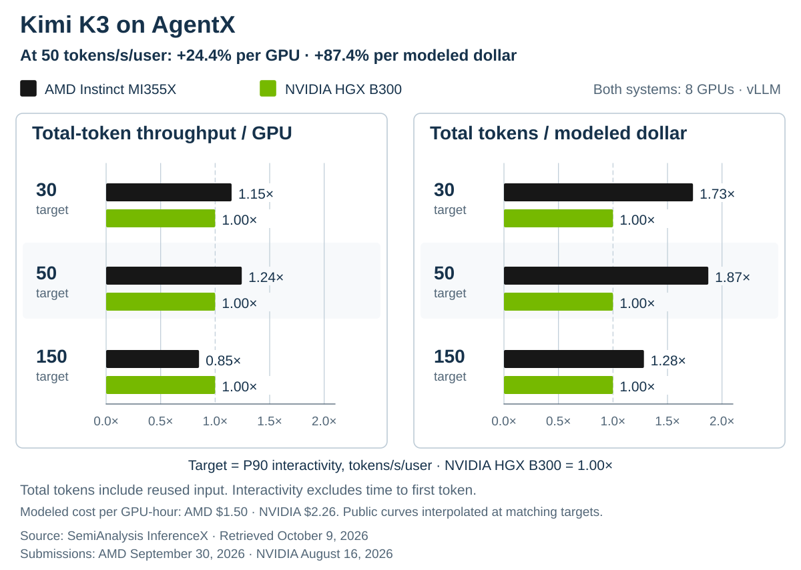
交互性取 P90 响应 token 间延迟的倒数，不包含首 token 时间。总 token 包含复用的输入 token 和生成的输出 token。来源：SemiAnalysis InferenceX，2026 年 10 月 9 日快照。
公开的稠密矩阵峰值为：AMD Instinct MI355X 的 MXFP4 达到 10.1 PFLOP/s，NVIDIA B300 的 FP4 达到 13.5 PFLOP/s。两者均配备 288 GB HBM3E 和 8 TB/s 峰值内存带宽。当前服务性能来自 AMD 及 vLLM 社区协作者持续的软件工程投入。
AgentX：工作负载与结果
公开的 AgentX 基准使用合成 token 重放真实编程智能体会话轨迹，同时保留请求长度、时间关系和前缀共享模式。如果缓存无限，理论前缀复用率超过 96%。推测解码运行使用固定的合成接受率参考。
在 P90 单用户交互速度 50 token/s 下，AMD Instinct MI355X 单 GPU 每秒服务约 7,567 个总 token，NVIDIA HGX B300 为 6,083，前者吞吐量高 24.4%。按照 SemiAnalysis 建模的每 GPU 小时成本 1.50 美元和 2.26 美元计算，两者每美元 TCO 分别可处理 1,816 万和 969 万个总 token，AMD 高 87.4%。
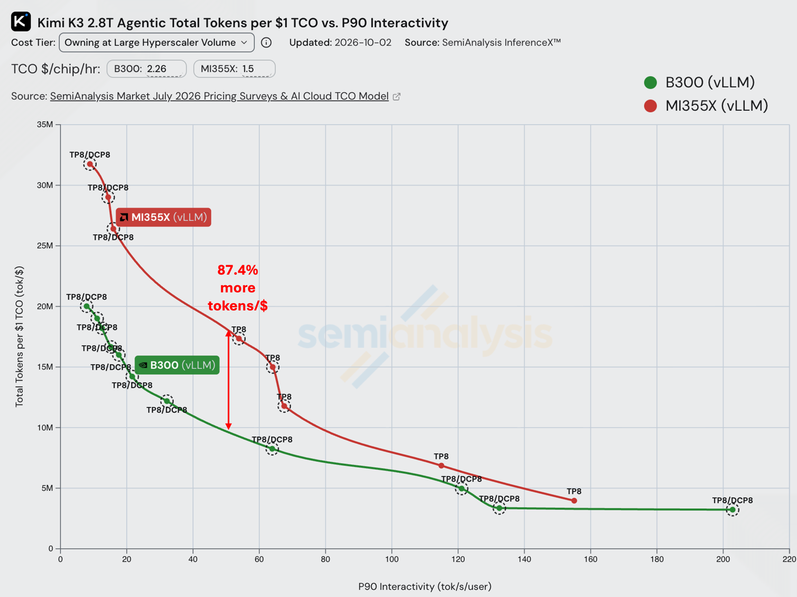
SemiAnalysis InferenceX 公开曲线，图中标注了单用户 50 token/s 的目标点。
公开曲线比较的是完整服务栈。下文每项优化旁边的测量来自独立测试，用于在各自注明的配置下解释单项机制。
深入 Kimi K3：专家、注意力与循环状态
智能体在后续轮次中可以复用大部分前缀，但处理一小段续写仍会触碰三类数据。
Kimi K3 使用两类注意力。它的 24 个 MLA 层保留随对话增长的压缩 KV 历史，新查询仍需访问这段历史。它的 69 个 KDA 层则传递固定维度的状态矩阵，在新 token 到达时更新状态。模型配置。
在 MoE 层中，路由器为每个 token 选择专家网络进行变换，专家权重由各请求共享。
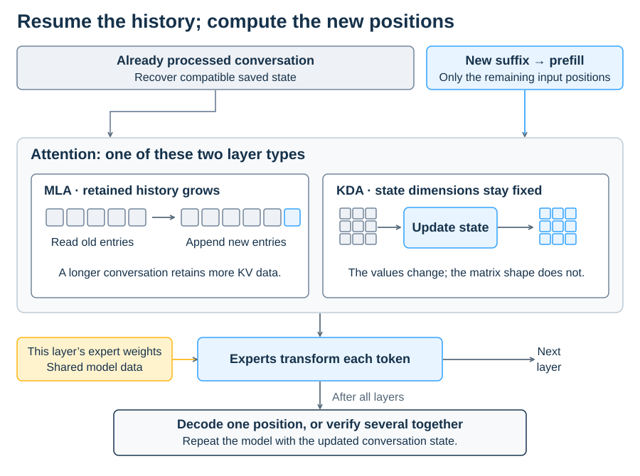
MLA 会随着对话增长保留更多历史；KDA 更新固定维度状态。保留更早的检查点意味着保存该状态的额外副本。
**跨轮次：**缓存复用和卸载（第 1 节）。
**单个模型步骤内：**专家投影、内核交接以及 MLA/KDA 调度（第 2～5 节）。
**选择草稿深度：**已提交输出与完整周期成本之间的权衡（第 6 节）。
1. 缓存：让会话状态可供复用
DCP 减少 GPU 内存中重复保存的历史，CPU 卸载则在 HBM 之外保留可复用状态。
DCP：跨 GPU 共享历史
在 TP8 下，每张 GPU 处理 Kimi K3 的 96 个 MLA 查询头中的 12 个，但仍保存完整的压缩 KV 历史。张量并行划分了查询头，却没有划分缓存。
采用八路解码上下文并行（DCP8）后，每张 GPU 只保存八分之一的缓存位置。解码时，GPU 交换查询，在各自本地历史上计算，再合并局部结果。
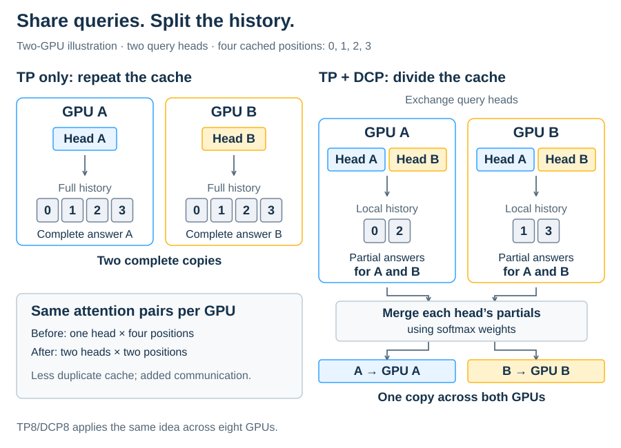
图中用两张 GPU 展示 TP8/DCP8 使用的划分方式。额外划分只用于 MLA 历史；KDA 状态仍按已有方式在各头之间划分。
每个局部结果都携带归一化信息，合并时可正确加权各分片。#51705 将 ROCm AITER 的 DCP 路径扩展到多 token 验证。
对于一段 142,000-token 对话，估算的 MLA 负载为 24 层 × 142,000 个位置 × 576 个 FP8 字节，约为每张 GPU 1.96 GB。DCP8 将其降至约 245 MB，尚未计入分配开销。每张 GPU 在八分之一的历史上处理八倍数量的头，因此主要注意力计算量大致不变。
CPU 卸载：保留无法继续放入 HBM 的状态
当状态无法继续放入 GPU 内存时，AMD 配置方案使用 vLLM 原生 CPU 卸载，把 MLA 历史和 KDA 检查点保存在主机 DRAM 中。
缓存命中需要互相兼容的恢复点。如果 MLA 历史到达 token 3,072，但最新兼容的 KDA 检查点在 2,048，请求必须从 2,048 恢复，并重新计算剩余前缀。
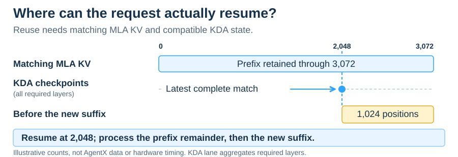
可用的恢复点必须在所有必需层上具有兼容状态。图中位置仅用于说明。
把注意力块尾部与 KDA 检查点一起保存，可以对齐两者的恢复位置（#54736）。恢复状态需要把数据传回 GPU，但可以避免重新计算前缀。请求恢复后，新 token 仍可能让多张 GPU 重复执行同一计算。
2. MoE：消除跨 GPU 的重复工作
在单张 GPU 上，路由专家的输出投影会返回消费者所需的完整向量。原 ROCm 路径中，之前的归约与归一化使八张 GPU 获得相同的 latent 输入，并且每张 GPU 都持有完整权重，因此同一个投影被重复执行了八次。
输出坐标可以在 GPU 间划分，但每个 rank 最终仍需要完整结果。Kimi K3 已经为共享专家的局部结果执行一次 all-reduce。
现在，每张 GPU 只把自己负责的路由输出加到共享专家局部结果中，再利用现有 all-reduce 组装完整结果，无需新增集合通信（#51253）。ROCm 实现沿用了相应的 CUDA 策略。
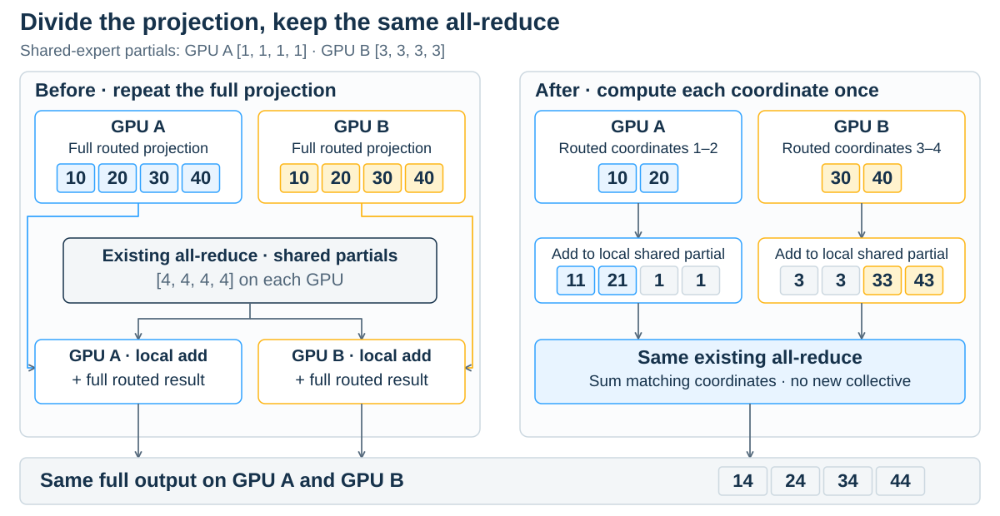
图中用两张 GPU 表示输出坐标所有权。两条路径均使用一次已有 all-reduce，并向每张 GPU 返回相同的完整结果。
每个输出坐标的路由贡献只计算一次，完整投影权重仍保持复制。在 PR 的测试中，8 张 AMD Instinct MI355X、TP8、并发 8～128、随机 8K 输入/1K 输出且关闭前缀缓存时，输出吞吐量提高 3.05%～4.91%。
释放 GPU 内存以保留更多缓存状态
每个 rank 目前只计算分配给自己的投影坐标，但仍保留完整权重。
如果只加载各 rank 实际使用的权重行，在 TP8 下跨 92 个 MoE 层，每张 GPU 可释放约 3.85 GiB（#59591）。融合路径的计算不变，释放的空间可用于 MLA 历史和 KDA 检查点。
这项改动在产生文章头部公开结果的镜像之后才合入。单独的 AgentX 实验显示，并发 32 和 48 时吞吐量提升不到 1%，并发 70 时提升 28.9%；此时报告的前缀缓存命中率从 74.8% 上升到 80.1%。
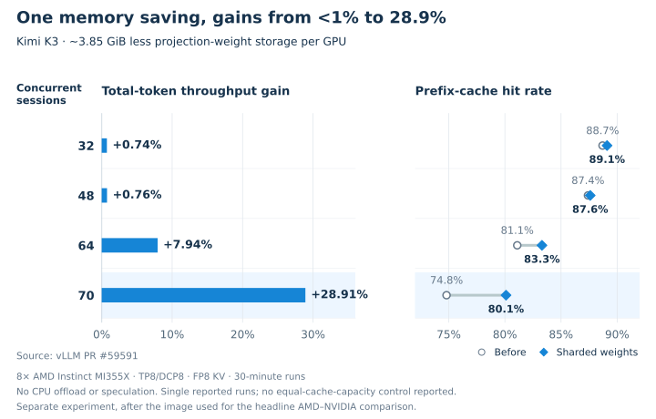
单独的 #59591 测量：8 张 AMD Instinct MI355X、TP8/DCP8、FP8 KV、运行 30 分钟，不使用 CPU 卸载或推测解码。
高并发时收益更大，与缓存压力的解释一致。如果在相同缓存容量下比较两种实现，可进一步隔离这一因素。
3. 内存流量：融合操作并消除无用复制
在单张 GPU 内部，下一步应检查内核之间传递的数据。
Kimi K3 的单 token KDA 路径原来运行三个计算内核和两次输出复制。卷积位于一个已融合 Q/K 归一化、衰减门、beta 门和循环更新的内核之前，输出归一化则在其后。融合 HIP 路径在一次启动中完成这些操作，并直接写入目标缓冲区（#50654）。
中间交接数据留在片上；卷积历史和循环状态仍写入 GPU 内存，供下一个 token 使用。
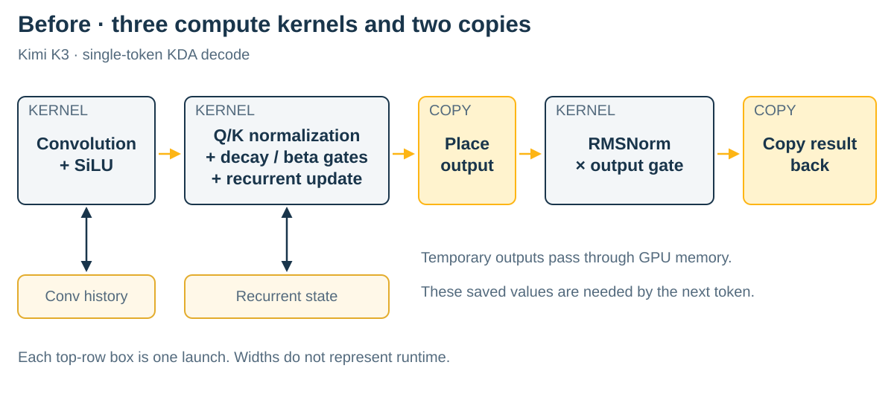
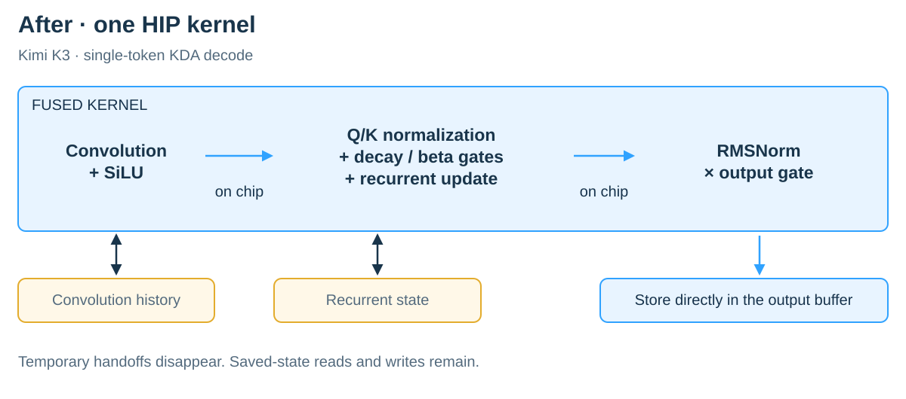
单 token、非推测 KDA 解码。融合前使用三个计算内核和两次复制，融合后使用一个 HIP 内核；需要跨 token 保存的状态仍保留。
AttnRes 将之前层块的输出与运行中的残差混合。将该混合操作与 RMSNorm 融合，可把临时混合结果保存在寄存器中（#50593）。后续层要使用的运行残差仍保留 BF16 舍入，而混合结果在归一化期间保持 FP32。测试要求持久状态更新完全一致，并允许归一化输出存在数值容差。
采用 AttnRes 融合后，在 8 张 AMD Instinct MI355X、TP8、100K 输入/1K 输出并关闭前缀缓存的条件下，输出吞吐量提高 14.2%，长预填充延迟基本不变。
只为实际使用输入的内核复制数据
ROCm 矩阵乘法调度器过去在选择内核之前打包输入。当它选择回退内核时，该内核仍读取原始输入，预先复制的数据完全没有使用。把打包操作移入实际需要它的专用分支后，消除了这些复制（#58566）。
性能分析揭示了浪费：每个解码步骤有 69 次无用复制，每个 KDA 层一次。每次只移动 1,792 字节，却花费约 4.8 微秒。更快地搬运这些字节几乎无济于事，真正占主导的是内核启动开销。
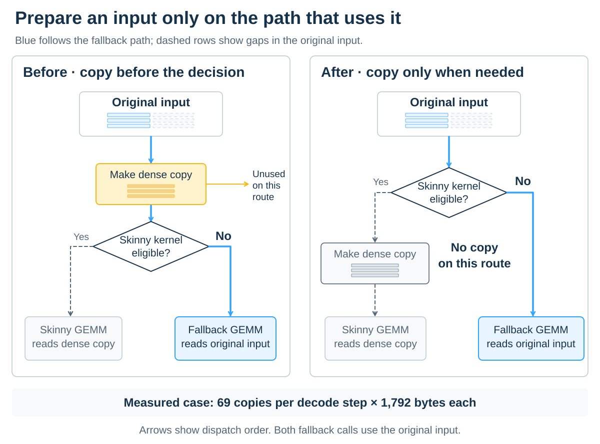
在 PR 的 TP8、并发 1、6 个草稿 token、384K 上下文性能分析中，移除的复制每步占 0.339 ms 的复制内核时间。
4. MLA：利用 AMD AITER 汇编加速长上下文解码
在 TP8 下，Kimi K3 每张 GPU 有 12 个查询头。把它填充到 16 个头后，即可使用 AMD AITER 的汇编解码路径。在报告的长上下文测试中，每输出 token 的时间从 43.8 ms 降至 23.6 ms。
该比较使用 TP8、不启用 DCP、并发为 1。#50578 中的适配器复制 4 个查询头，将其打包进 16 头布局，并丢弃这些额外头的输出。DCP8 会呈现不同的 96 头形状。
这种填充不会改变模型操作，因为每个查询头都独立地对缓存位置执行注意力。增加另一个头不会改变原有头的 softmax。该解码路径只填充查询，已存储的压缩 KV 历史大小不变。
长对话为注意力提供了大量工作，但这些工作需要分散到 GPU 上。我们检查的历史代码中，一个保守的调度提示把 Gluon 路径限制为每个请求一个工作组，由该工作组处理完整对话。填充使 AMD AITER 汇编路径可用；该路径采用不同策略，将历史划分给多个工作组并合并结果。
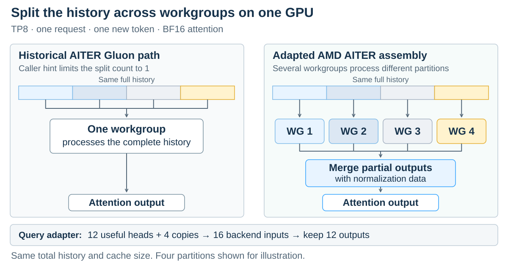
历史分区表示同一张 GPU 内分配给各工作组的任务。图中用 4 个分区示意，实际检查到的汇编策略选择 16 个；KV 存储不变。
| 输入/输出 token | 原始 Gluon 路径 | 填充后的汇编路径 |
|---|---|---|
| 1K / 1K | 22.9 ms/token | 22.8 ms/token |
| 32K / 1K | 43.8 ms/token | 23.6 ms/token |
以上为 PR 报告的平均每输出 token 时间：8 张 AMD Instinct MI355X、TP8、并发 1、MXFP4 模型权重、BF16 注意力和普通单 token 解码。短输入几乎没有变化，长输入的每 token 时间接近减半。这些服务测量包含查询准备和输出处理。
5. KDA：并行化预填充与推测验证
MLA 可以把保留的历史分配给多个工作组。KDA 的调度更难，因为每个 token 都依赖前一个状态。#54038 中的融合预填充，会在每组 token 的输入状态尚未确定前，先准备该组的组合变换。
例如，“把状态减半再加 2”，然后“再减半并加 1”，可以合并成“取起始状态的四分之一再加 2”。这个规则可以在起始状态到达前计算。
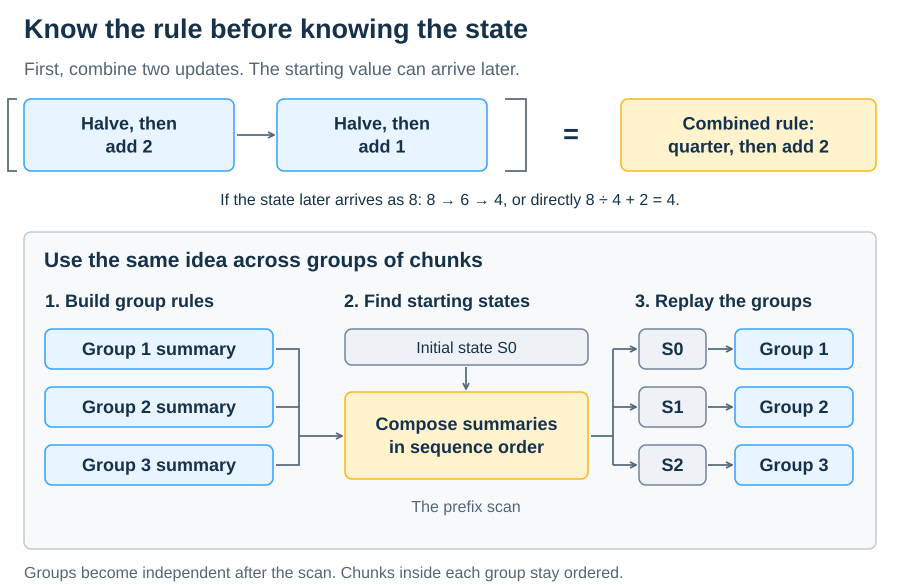
当前阅读器不支持 iframe 时，展开静态预览
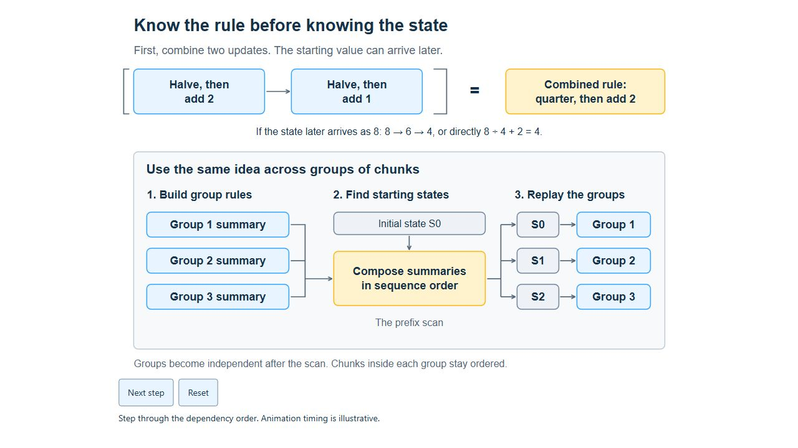
KDA 使用矩阵变换实现这一过程。先对各组摘要进行有序扫描，确定每组的起始状态；随后各组并行重放自己的 token。token 顺序保持不变，但每组无需再等待前一组完成重放。
分组会增加第二次遍历，并把融合分块路径从两次启动扩展到四次。当序列或头数量较少、并行工作不足时，这种方式有帮助；否则，额外遍历可能得不偿失。
在每组内部，循环遍历会在分块之间把状态保存在矩阵累加器寄存器中，避免写入全局内存再重新加载。
融合 KDA 在一项独立的三后端比较中，相比 Triton 在 4K 和 16K 输入长度上分别带来 5.3%～5.6% 的输入吞吐量提升。配置为 8 张 AMD Instinct MI355X、TP8、并发 32、关闭前缀缓存、输出 1 个 token。该结果测量的是完整后端。基准结果。
为推测验证使用更小的分块
短验证批次需要不同的划分方式。TP8 下，每张 GPU 有 12 个 KDA 头，每个头包含 128 个 value 列。如果把每个头分成 4 个 32 列分块，在 256 个计算单元上只能启动 48 个工作组。#58045 改用 4 列分块，把工作组数量提高到 384。
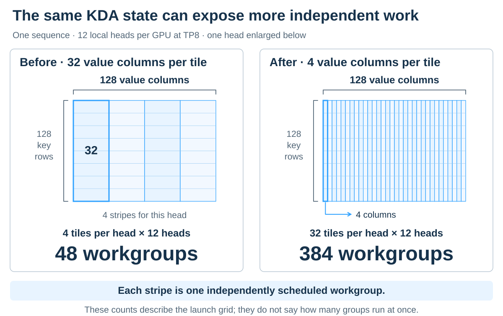
每个分块负责不同的 value 列，并按顺序遍历同一 token 序列。更窄的分块把独立工作组数量从 48 提高到 384。
在一项单张 AMD Instinct MI355X 的独立 Graph Replay 内核测试中（TP8 维度、一个序列、4 个验证位置），每层耗时从 16.20 微秒降至 5.61 微秒，提升 2.89 倍。收益包括更窄分块、单 wave 工作组、统一长度特化以及把 token 无关工作移出循环。变长批次仍使用动态路径；测试同时比较输出和循环状态。
6. 推测解码：选择草稿 token 数量
更快的验证会改变值得检查的草稿 token 数。真正有用的速率是“已提交输出 ÷ 完整草稿—验证—提交周期时间”。
例如，在 AgentX 固定接受率参考下，3 个草稿 token 每周期预期提交 3.00 个 token，4 个草稿 token 为 3.36 个，均包含恢复或奖励 token。后者每周期多提交 12%。只有完整周期耗时增加不到 12% 时，第 4 个草稿 token 才会提高吞吐量。
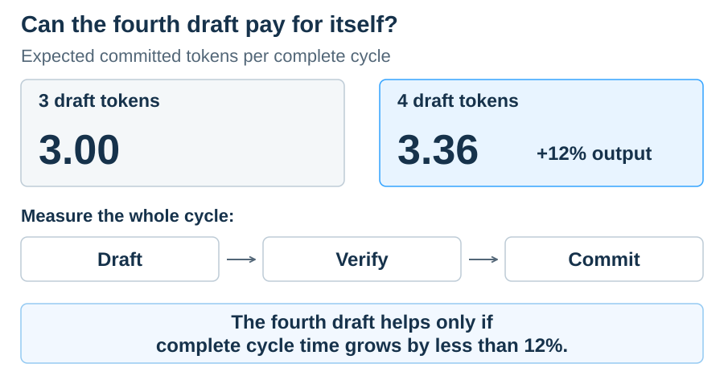
在受控接受率参考下的示意比较。12% 是成本预算；本文没有测量完整周期耗时增长。
公开 AMD 配置在 DCP1 下使用 3～7 个草稿 token，在更高并发的 DCP8 设置中关闭推测解码。
下一步优化方向
正在进行的预填充/解码分离工作带来新的检查点：各 worker 是否负载均衡，以及数据传输能否在数据被使用前完成。
对于其他模型或工作负载，可以从实际部署的请求形状出发，进行三项检查：
比较各 rank。 是否有多张 GPU 在集合通信之前计算相同结果，而这些结果本可由集合通信组装？
跟踪缓冲区。 所选路径上的每个临时张量是否都有消费者？数据能否留在片上？
统计独立工作量。 实际的头、token 和分块是否产生足够多的工作组来铺满硬件？
应在目标响应速度下测量完整请求，同时检查输出和保存状态。只有当一个更快的内核缩短了阻塞下一个 token 的工作时，它才真正有价值。
贡献与致谢
Kimi K3 优化工作包含 AMD、Embedded LLM 和更广泛社区贡献的 50 多个已合并 AMD/ROCm 相关 vLLM PR，以及 AITER 的开发、集成、评审和基准测试。这些贡献覆盖注意力、循环计算、MoE、量化、Graph 执行、缓存支持和平台集成。
特别感谢：Pin Siang Tan、Jun Kang Chow、Ye Hur Cheong、Hongxia Yang、Seungrok Jung、Bill He、Yichao Zhu、Hyukjoon Lee、Andy Luo、Mrinal Karvir、Richard Li、Sun Peng，以及原文列出的所有贡献者。
完整贡献者名单及个人 GitHub 链接请参见英文原文的 Contributions and acknowledgments 部分。
基准说明
不同交互速度目标下的服务配置如下：
| P90 交互速度（token/s/用户） | AMD Instinct MI355X | NVIDIA HGX B300 |
|---|---|---|
| 30 和 50 | SimpleCPU 卸载；DCP8/无草稿到 DCP1/3 个草稿 | Mooncake 卸载；DCP8 |
| 150 | 仅 GPU；DCP1；5～7 个草稿 | Mooncake 卸载；DCP8 |
两个系统均使用 8 张 GPU、TP8、FP4 权重和 FP8 KV。各数值在匹配交互速度时，从对应的公开卸载或纯 GPU 系列中插值得到；相邻测量点的并发度、DCP 和草稿深度可能不同。固定版本的 AMD 配置（YAML）和 NVIDIA 启动脚本给出镜像标签和完整设置。
重放使用 cc-traces-weka-062126 数据集和固定版本的 AIPerf 测试工具。测试排除预热，并在固定合成接受率曲线下进行一小时性能分析。配置方案给出随机种子、会话开始和预热设置，但没有记录下载的数据集修订版。闭环重放可能生成不同的完成请求组合。
软件和卸载。 两项提交分别使用 vLLM 36768d1bf（AMD）和 5894fdf98（NVIDIA）。配置的主机缓存预算分别为每张 GPU 224.875 GB 和 281 GB；连接器与镜像设置见上述方案。
成本。 SemiAnalysis 的大型超大规模云厂商拥有成本模型和公开 GPU 成本常数，对 AMD Instinct MI355X 使用每 GPU 小时 1.50 美元，对 NVIDIA HGX B300 使用 2.26 美元。总 token/美元 = 单 GPU 每秒总 token × 3,600 ÷ 建模的每 GPU 小时成本。部分资本与利用率假设尚未公开。在单用户 50 token/s 交互目标下，该比较得到的建模单位 token 成本低 46.6%。
快照。 SemiAnalysis InferenceX 数据获取于 2026 年 10 月 9 日；AMD 和 NVIDIA 提交日期分别为 2026 年 9 月 30 日和 8 月 16 日。各 PR 基准使用其注明的工作负载；#59591 是头部结果镜像之后进行的独立实验。
| 每张 GPU 的公开规格 | AMD Instinct MI355X | NVIDIA B300 GPU |
|---|---|---|
| 稠密低精度矩阵峰值 | 10.1 PFLOP/s MXFP4 | 13.5 PFLOP/s FP4 |
| GPU 内存 | 288 GB HBM3E | 288 GB HBM3E |
| 峰值内存带宽 | 8 TB/s | 8 TB/s |
来源：AMD Instinct MI355X、NVIDIA HGX B300、NVIDIA 内存规格。基准详情参见 AgentX 方法。
技术说明：专家路由与精度
Kimi K3 每个 token 从 896 个专家中选择 16 个，因此即使服务器批量很大，每个专家仍可能只有少量行，生成的专家分块可能包含填充。
A4W4 减少的是另一部分流量：#53940 的集成把激活从 8 位改为 4 位，而权重仍为 4 位。总流量还包括 BF16 中间输出和专家分块填充。
技术说明：KDA 精度与片上内存
每个分块仍需解决其 token 之间的依赖。内核将依赖关系组合成一个变换，供后续矩阵乘法应用。这带来两个实际问题：什么精度才能保留正确答案，以及片上临时数据能占多少空间？
一个小例子可以说明原理：把较早的修正代入较晚的修正后，每个答案都能直接用已知输入表达。得到的系数表已经包含整条依赖链的影响。
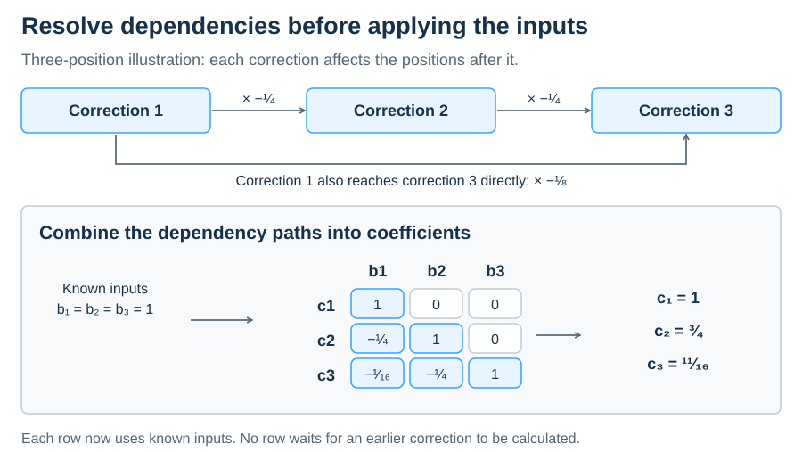
在标量示例中，位置 1 对位置 3 的影响有两条路径：直接影响为 −1/8；经过位置 2 的影响为 (−1/4) × (−1/4) = 1/16，合计 −1/16，即表格左下角元素。对角线上方为零，因为后面的位置不能影响前面的位置。
真实的 prologue 会计算 64×64 分块内依赖矩阵的逆。后续矩阵乘法使用该变换处理依赖关系。
求逆过程中的中间值可能先增大再相互抵消，过早舍入会丢失最终结果需要的信息。实现使用 AMD 原生的 FP32 矩阵指令，在敏感的求逆阶段保持 FP32 输入和累加；只有完成的逆矩阵才舍入为 BF16，供后续乘法使用。内核实现。
为什么 FP32 累加无法恢复已舍入的输入
考虑用 256.5 减去 256。两个输入在 FP32 中都能精确表示，但 256.5 转换为 BF16 时会舍入为 256：
| 输入精度 | 使用 FP32 执行减法 | 结果 |
|---|---|---|
| 保留原始 FP32 输入 | 256.5 − 256 | 0.5 |
| 先把输入舍入为 BF16 | 256 − 256 | 0 |
FP32 减法无法恢复运算开始前已经丢失的信息。这组简化数值说明，求逆为什么要使用原生 16×16×4 FP32 矩阵指令，同时保持输入和累加精度。FP4 模型同样依赖更高精度的操作，整体性能取决于这些数值路径能否高效实现。
Prologue 还受到本地内存预算限制。AMD 把片上共享暂存区称为 LDS。Q 和 K 分块在不同时刻使用，因此可以复用存储空间；下三角输入只保存其 10 个实际占用的 16×16 分块。工作组请求 79.5 KiB，向上舍入为 80 KiB，正好是 AMD CDNA 4 计算单元 160 KiB LDS 预算的一半。
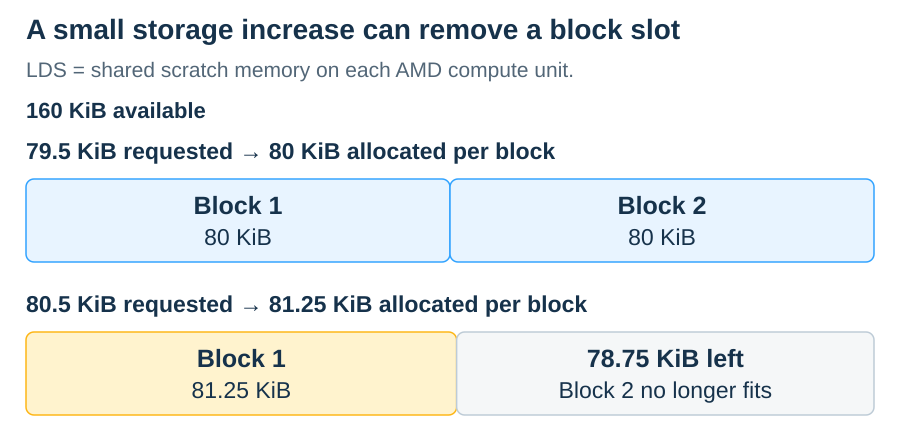
分配以 1,280 字节为单位向上舍入。图中的额外 KiB 会跨过驻留阈值，使两份分配无法同时放入。这只是容量计算，寄存器等资源还可能施加其他限制。
可以在保持内核二进制不变的情况下，预留足够多未使用 LDS 来跨过该阈值，以测试第二个驻留工作组是否有帮助。如果运行时间几乎不变，说明对于该形状，额外工作组贡献很小。
分块之间的状态
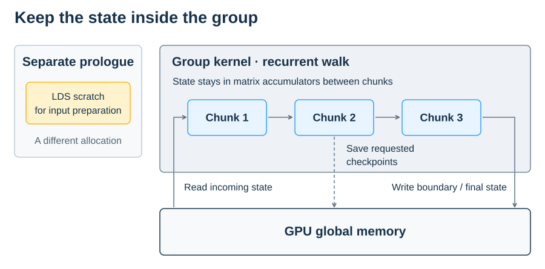
Prologue 使用自己的 LDS 暂存区；分组内核则在分块之间把循环状态保存在矩阵累加器中。输入状态、请求保存的检查点和最终状态仍使用 GPU 内存。分组摘要与起始状态也需要跨内核边界传递。
免责声明
本文信息仅供参考，可能包含技术错误、遗漏或排版错误。由于产品及路线图变化、组件和主板版本变化、新模型或产品发布、不同厂商产品差异、软件变化、BIOS 刷新或固件升级等原因，信息可能发生变化或失效。任何计算机系统都存在无法完全防止或消除的安全漏洞风险。
AMD 没有义务更新、纠正或修订这些信息，但保留随时修改内容且无需通知的权利。信息按“现状”提供；AMD 不就内容作任何陈述或保证，也不对其中可能存在的不准确、错误或遗漏承担责任。AMD 明确否认任何有关不侵权、适销性或特定用途适用性的默示保证。即使 AMD 已被明确告知可能发生损害，也不对任何人因依赖或使用本文信息而产生的直接、间接、特殊或其他后果性损害负责。
AMD、AMD 箭头徽标及其组合是 Advanced Micro Devices, Inc. 的商标。本文使用的其他产品名称仅用于识别，可能是其各自公司的商标。© 2026 Advanced Micro Devices, Inc. 保留所有权利。